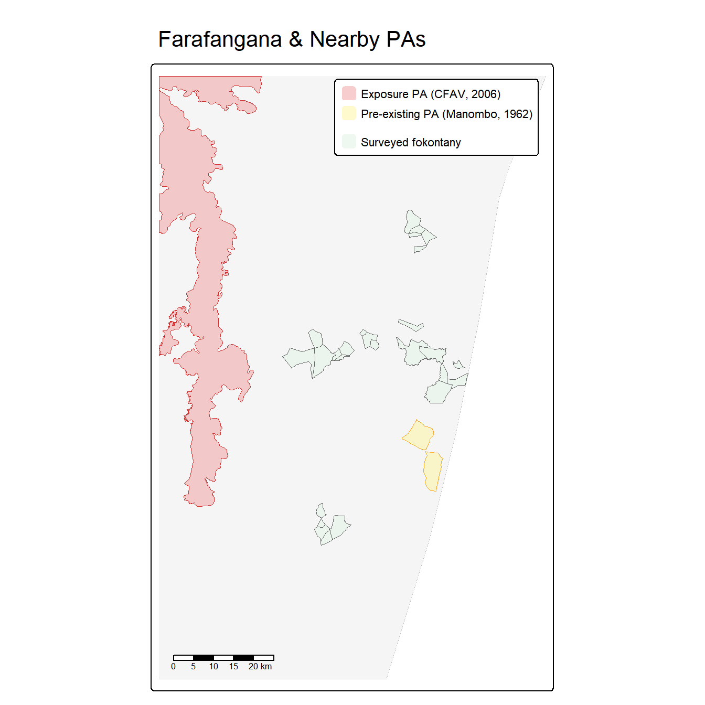
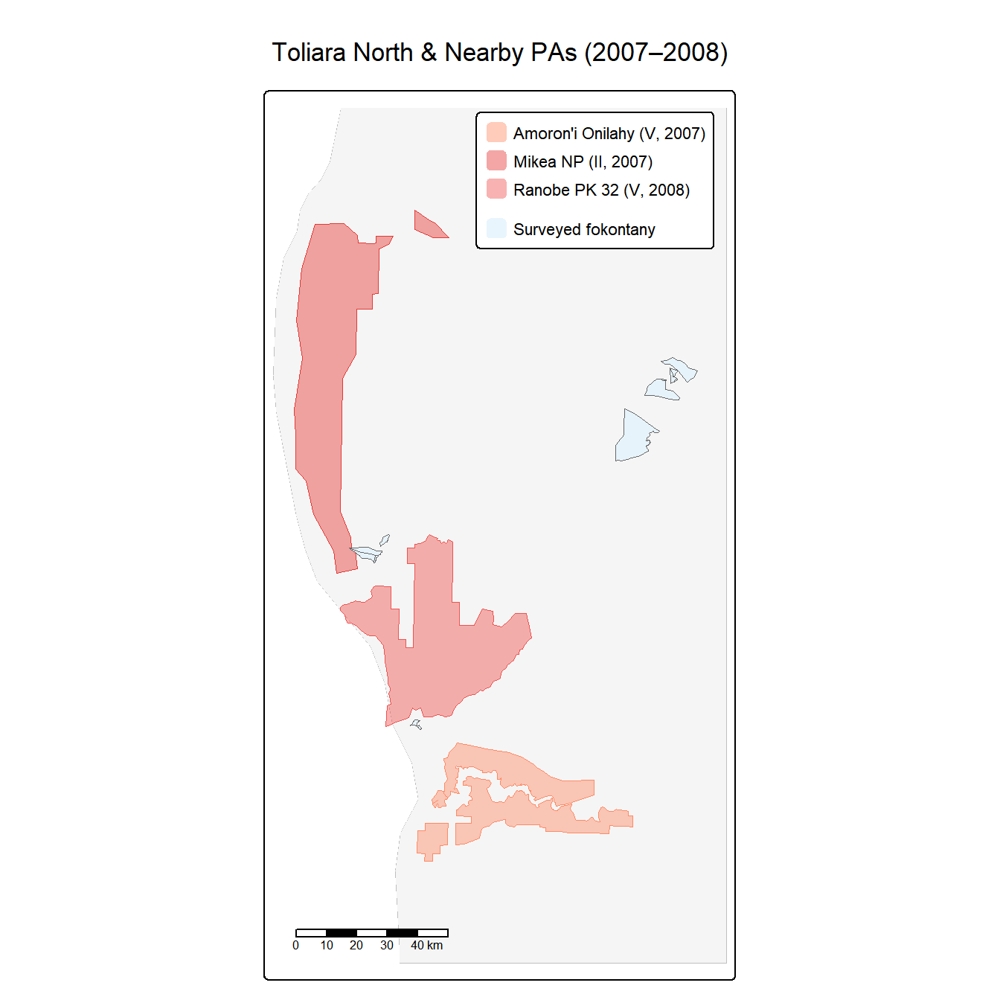
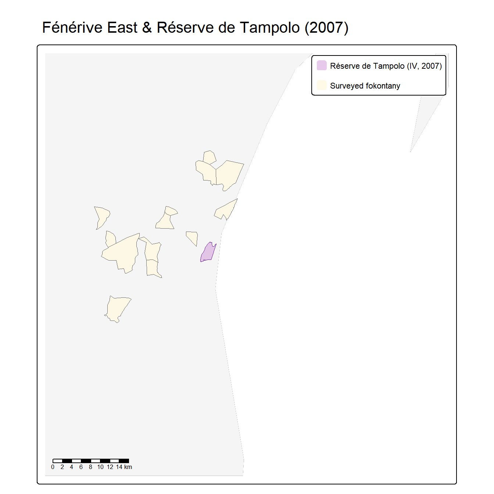
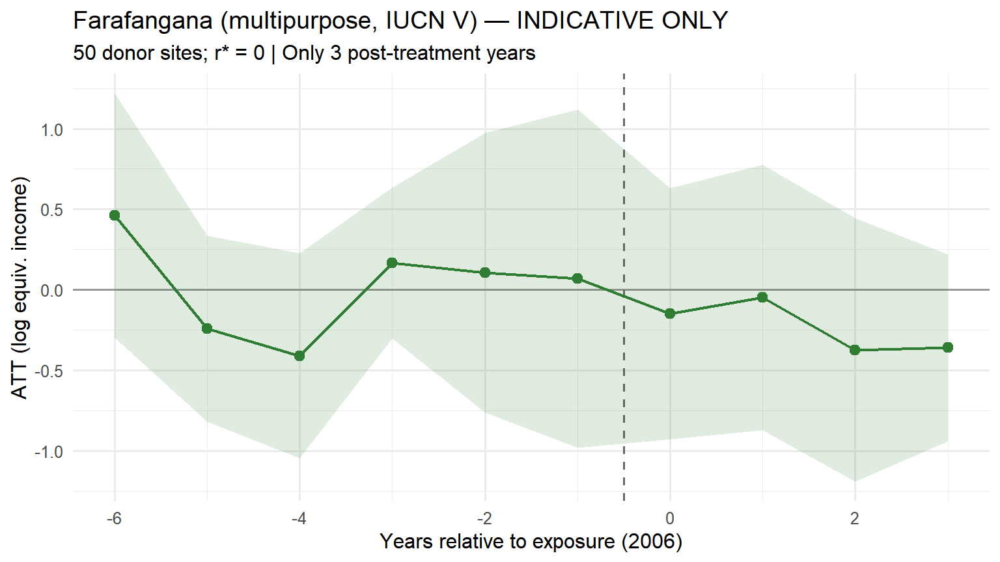
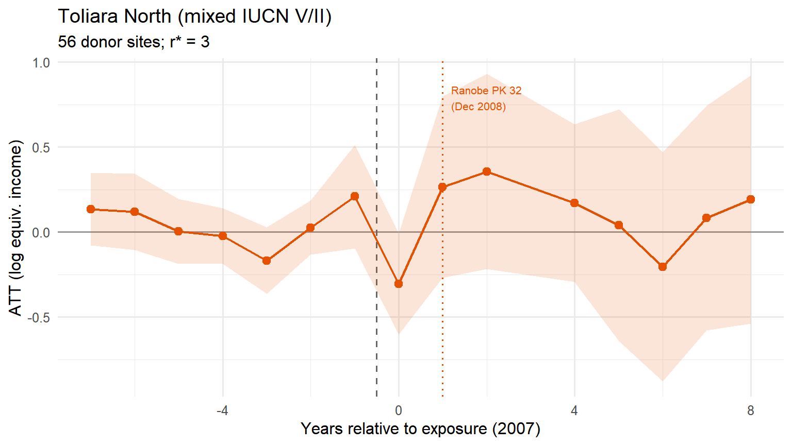
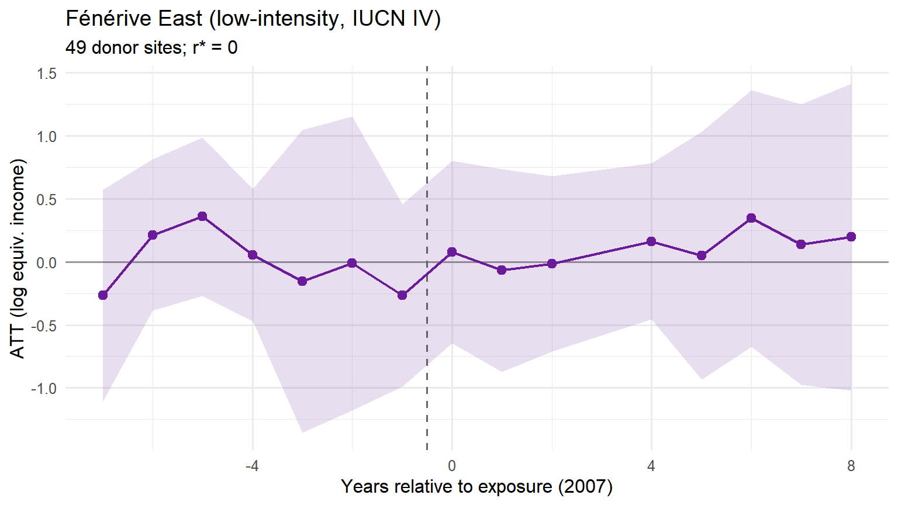
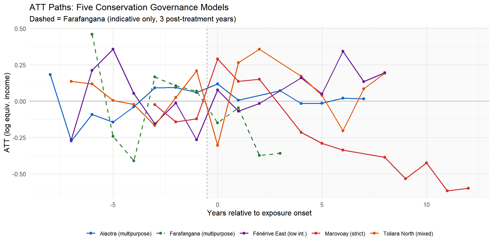
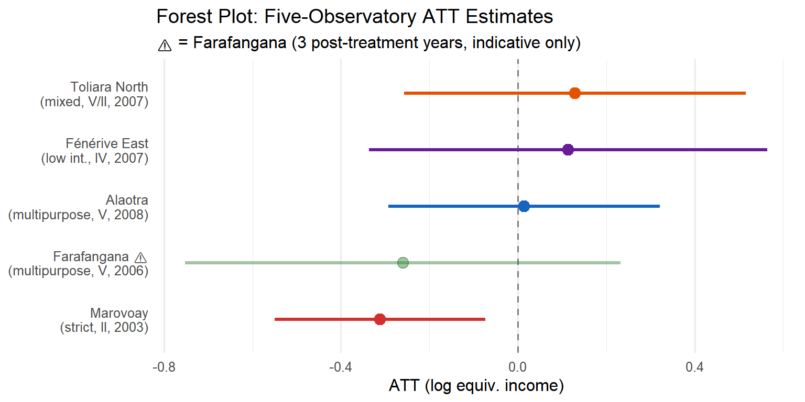

5 Extensions
Three additional observatory–PA pairs
The two-case comparison in Chapter 4 — strict enforcement at Ankarafantsika versus participatory conservation at Lac Alaotra — limits external validity. This chapter extends the analysis to three additional rural observatories that the donor-pool audit (Appendix B) flagged as themselves adjacent to protected areas created during the study period:
- Farafangana (obs. 15): adjacent to the Corridor Forestier Ambositra-Vondrozo (IUCN V, September 2006), a large highland corridor under light-touch regulation. Survey window: 1999–2008 (3 post-treatment years only).
- Toliara North (obs. 23): adjacent to Amoron’i Onilahy (IUCN V, January 2007), Mikea National Park (IUCN II, April 2007), and Ranobe PK 32 (IUCN V, December 2008) — a rapid cascade of coastal and dry-forest protections. Survey window: 1999–2014.
- Fénérive East (obs. 24): adjacent to the Réserve de Tampolo (IUCN IV, August 2007), a small (~7.3 km²) research forest managed by ESSA-Forêts. Survey window: 1999–2014.
These three observatories move from liabilities in the donor pool to informative exposed units. Together with Marovoay and Alaotra, they enable a five-case examination of how conservation governance type, enforcement intensity, and PA size shape household-income outcomes.
A methodological note: the donor pool in this chapter is restricted to six clean observatories (Antsirabe, Antsohihy, Tsiroanomandidy, Ambovombe, Mahanoro, Itasy) as identified in Appendix B. The three also-exposed donors used in Chapter 4 are now treated as exposed units here. Marovoay and Alaotra ATT estimates will therefore differ slightly from their Chapter 4 counterparts.
6 Study sites
6.1 Farafangana and the Corridor Forestier Ambositra-Vondrozo
The CFAV (~300 km, IUCN V) runs along the eastern highland escarpment. A temporary protection decree was issued on 15 September 2006 (WDPA 555697881) as part of the post-2003 SAPM expansion. Category V status implies land-use regulation at the forest margin — primarily restrictions on slash-and-burn (tavy) and charcoal production in buffer zones — rather than exclusionary enforcement.
The Farafangana observatory lies on the southeastern coastal plain; its nearest commune (Mahatsinjo) borders the CFAV at ~14 km. A complication: Manombo Special Reserve (IUCN IV, 1962) lies ~12 km from a second commune. Because Manombo predates the study period with unchanged boundaries and management, it constitutes a constant background condition absorbed into the unit fixed effect. The ATT for Farafangana therefore identifies the additional income effect of the 2006 CFAV decree.
All survey sites are exposed at observatory level from 2006; no within-observatory split is possible. With only 3 post-treatment years (2006–2008), gsynth estimates should be treated as illustrative.
6.2 Toliara North and the coastal PA cascade
Observatory 23 sits on Madagascar’s arid southwest coast, a landscape of spiny thicket and dry deciduous forest. Three PAs became operative in rapid succession:
- Amoron’i Onilahy (IUCN V, 17 January 2007, ~12 km): riparian and coastal landscape PA covering the Onilahy estuary.
- Mikea National Park (IUCN II, 13 April 2007, ~16 km): strict reserve protecting Mikea dry spiny-thicket forest.
- Ranobe PK 32 (IUCN V, 2 December 2008, ~1.4 km): large terrestrial PA (1,685 km²) bordering the observatory at extremely close range.
Exposure year is 2007 — the first full survey year following the initial January 2007 decree. The December 2008 Ranobe decree constitutes a secondary intensification within the post-exposure window. The dominant conservation character is IUCN V / multipurpose, though the presence of Mikea NP (IUCN II) at 16 km introduces a strict element.

6.3 Fénérive East and the Réserve de Tampolo
The Réserve de Tampolo (IUCN IV, ~7.3 km²) is a small coastal littoral forest managed by ESSA-Forêts as a research and teaching forest. A temporary protection decree was issued on 20 August 2007 (WDPA 354011). The reserve’s primary function is scientific access and conservation research, not community resource exclusion. Its small footprint and institutional character suggest low exposure intensity.
Exposure year is 2007. The survey has 8 pre-treatment years (1999–2006) and 8 post-treatment years (2007–2014) — the most symmetric panel among the new sites.

6.4 Design summary
| Five Exposed Observatories: Design Summary | |||||||
| ⚠ Farafangana: only 3 post-treatment years — estimates are indicative only | |||||||
| Observatory | PA (primary) | IUCN | Type | Treat yr | Pre | Post | Survey |
|---|---|---|---|---|---|---|---|
| Marovoay (03) | Ankarafantsika NP | II | Strict | 2003 | 4 | 11 | 1999–2014 |
| Alaotra (21) | Lac Alaotra PHP | V | Multipurpose | 2008 | 9 | 6 | 1999–2014 |
| Farafangana (15) | Corridor Ambositra-Vondrozo | V | Multipurpose | 2006 | 7 | 3 | 1999–2008 ⚠ |
| Toliara N. (23) | Amoron'i Onilahy + Mikea + Ranobe | V/II | Mixed (V dom.) | 2007 | 8 | 8 | 1999–2014 |
| Fénérive E. (24) | Réserve de Tampolo | IV | Low intensity | 2007 | 8 | 8 | 1999–2014 |
7 Results by observatory
The identification strategy and estimator are identical to Chapter 4. We estimate the gsynth ATT separately for each exposed observatory. Each model specifies \(D_{it} = 1\) only for the target observatory’s exposed unit(s) from its exposure year onward; all other units carry \(D_{it} = 0\) and serve as additional factors for counterfactual construction. This within-model use of other exposed observatories as donors is consistent with the interactive FE framework so long as exposure timing differs across observatories (Xu 2017). The number of latent factors \(r\) is selected by leave-one-out cross-validation; inference is parametric bootstrap with 200 replications.
7.1 Farafangana: Corridor Forestier effect
Warning
Farafangana has only 3 post-treatment survey years (2006–2008). The gsynth estimates are presented for completeness but should be treated with extreme caution. Pre-treatment fit is assessed over 7 years; post-treatment precision is insufficient for firm conclusions.
The point estimate is -0.260 log points (\(\approx\) 23%), but with very wide confidence intervals (\(p\) = 0.301) that span both negative and positive values. With only 3 post-treatment observations, this estimate has low reliability and should not be interpreted independently.

7.2 Toliara North: coastal PA cascade
The Toliara North ATT estimates a composite treatment effect from the 2007–2008 PA cascade. The point estimate is +0.129 log points (\(p\) = 0.512), not statistically significant. The December 2008 secondary shock (Ranobe PK 32, the closest PA at <1.5 km) coincides with a visible shift in the ATT path, but it is impossible to separate the 2007 and 2008 effects without additional micro-data. The dominant conservation character of the three PAs is multipurpose (IUCN V), consistent with the near-zero aggregate income effect.

7.3 Fénérive East: low-intensity reserve
The Fénérive East ATT shows a small positive but nonsignificant effect (+0.114 log points, \(p\) = 0.619) — perhaps the most interpretively clear result among the three new sites. A 7.3 km² research forest cannot plausibly impose population-level income costs on a multi-commune observatory. The 8/8 pre-/post-treatment symmetry provides the most credible pre-trend assessment of the new sites.

8 Five-case synthesis
8.1 Comparative results
| Five-Observatory Comparative Results | ||||||||||
| ⚠ Farafangana: only 3 post-treatment years — treat as indicative | ||||||||||
| Observatory | PA type | Treat yr | ATT (log pts) | SE | 95% CI | ATT (%) | p-value | r* | N donors | Post yrs |
|---|---|---|---|---|---|---|---|---|---|---|
| Marovoay (03) | Strict (II) | 2003 | -0.312 | 0.122 | [-0.55, -0.073] | -26.8% | 0.010 | 0 | 57 | 11 |
| Alaotra (21) | Multipurpose (V) | 2008 | 0.014 | 0.156 | [-0.293, 0.321] | 1.4% | 0.928 | 1 | 56 | 6 |
| Farafangana (15) ⚠ | Multipurpose (V) | 2006 | -0.260 | 0.251 | [-0.752, 0.232] | -22.9% | 0.301 | 0 | 50 | 3 |
| Toliara North (23) | Mixed (V/II) | 2007 | 0.129 | 0.197 | [-0.257, 0.516] | 13.8% | 0.512 | 3 | 56 | 8 |
| Fénérive East (24) | Low-intensity (IV) | 2007 | 0.114 | 0.230 | [-0.336, 0.564] | 12.1% | 0.619 | 0 | 49 | 8 |


8.2 Three patterns
The five-case comparison suggests three broad patterns, each of which warrants careful interpretation given the small number of exposed units per model.
The first pattern is a large negative income gap under strict enforcement. Ankarafantsika (Marovoay) shows the largest and most persistent negative gap relative to its synthetic counterfactual, statistically significant over the 1999–2014 panel; within-observatory DiD (Section 8.2) further confirms that the east-west income gap persists through the 2025 resurvey. This is consistent with direct resource exclusion from a large, actively patrolled park. However, as discussed in Section 5.2.1 and Chapter 9, the within-Marovoay comparison between east-bank and west-bank villages finds no equivalent income difference, which raises the possibility that the gsynth is capturing regional economic decline — the long-run deterioration of the Marovoay irrigated rice economy — rather than a park-specific effect. The Marovoay result should therefore be treated as suggestive rather than conclusive evidence of a conservation-driven income loss.
The second pattern is near-zero estimated effects under participatory or multipurpose governance. Lac Alaotra, Toliara North, and tentatively Farafangana all show point estimates clustered near zero with no statistically significant departure. The community-based management framework at Alaotra, and the lighter regulatory touch at the other sites, appears consistent with no detectable aggregate income costs at the survey-year frequency — though low statistical power (one exposed unit per model) means that moderate effects cannot be ruled out.
The third pattern is that a small, research-oriented reserve with minimal enforcement leaves estimated income unchanged. Fénérive East shows a near-zero ATT with a moderately narrow confidence interval, which is the result one would expect from a 7.3 km² scientific forest that does not constrain community livelihoods at scale.
8.3 Caveats
Several limitations temper interpretation of the extended comparison. With only three post-treatment years, the Farafangana estimate has low reliability and should not be compared numerically to the others. At Toliara North, the rapid succession of three protected areas in 2007–2008 means the estimated ATT captures a composite of overlapping events rather than a clean single intervention. Using only six donor observatories rather than the nine available in Chapter 4 reduces counterfactual precision, which is why ATT estimates for Marovoay and Alaotra differ slightly between the two chapters. Identification for the three new sites rests on decree dates and spatial proximity without the behavioural validation available for Marovoay and Alaotra, since no 2025 resurvey covered these observatories. Finally, each observatory-level model has exactly one exposed unit, which imposes a minimum permutation p-value of roughly \(1/N_{\text{donors}}\); effects below around 20% cannot be reliably distinguished from chance.